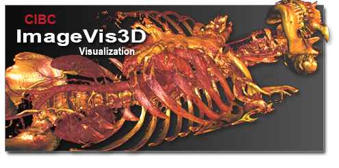

|  | Simple Scalable Interactive ImageVis3D is a new volume rendering program
developed by the NIH/NIGMS Center for Integrative Biomedical Computing.
The main design goals are simplicity, scalability, and interactivity. Source Code |
Overview
 |
| ImageVis3D Mobile for the iPhone and iPad is now available from Apple iTunes App store. |
ImageVis3D is a new volume rendering program developed by the NIH/NIGMS Center for Integrative Biomedical Computing (CIBC). The main design goals of ImageVis3D are: simplicity, scalability, and interactivity. Simplicity is achieved with a new user interface that gives an unprecedented level of flexibility. Scalability and interactivity mean that users can interactively explore terabyte-sized data sets on hardware ranging from mobile devices to high-end graphics workstations. Finally, the open source nature as well as the strict component-by-component design allow developers not only to extend ImageVis3D itself but also reuse parts of it, such as the rendering core. This rendering core for instance is planned to replace the volume rendering subsystems in many applications at the SCI Institute and with our collaborators.
ImageVis3D is open source software that we develop to aid the research community in doing what they do best. While we do enjoy doing this, we would not be able to dream of spending nearly as much time with ImageVis3D as we do if it wasn't for your support. Direct praise for our software is one of the main criterion our funding organizations look for when deciding if they should continue funding development.
Acknowledgment
If you use ImageVis3D in work that leads to published research, we humbly ask that you add the following to the 'Acknowledgments' section of your paper:
"This project was supported by the National Institute of General Medical Sciences of the National Institutes of Health under grant number P41 GM103545-18, and the DOE SciDAC Visualization and Analytics Center for Enabling Technologies, DEFC0206ER25781."
Demonstrating such effect is our foremost objective when speaking to our funding agencies. If you do not want to sign up for any of our mailing lists just for this reason, you can send a direct e-mail to Tom Fogal and he will route it appropriately.
"Verbal" (i.e. textual) praise is also useful for us, if we may quote it. If you would just like to drop us a note and say that our software is useful to you, that would be great as well. Plus it makes us feel good.
Citations
If you wish to cite ImageVis3D in academic work, we ask that you cite, Tuvok, an Architecture for Large Scale Volume Rendering. If your field uses BibTeX, we provide a BibTeX citation that you can use. Alternatively, if you use EndNote, we provide an EndNote file as well. For other fields, just open the BibTeX citation in a text editor (i.e., notepad on Windows, TextEdit on Mac) and copy the fields into your software manually.
• ImageVis3D Citation: [bibtex citation] [Endnote citation]
ImageVis3D License
ImageVis3D is available for free and is open source under the MIT License
The MIT License Copyright (c) 2012 Scientific Computing and Imaging Institute, University of Utah. License for the specific language governing rights and limitations under Permission is hereby granted, free of charge, to any person obtaining a copy of this software and associated documentation files (the "Software"), to deal in the Software without restriction, including without limitation the rights to use, copy, modify, merge, publish, distribute, sublicense, and/or sell copies of the Software, and to permit persons to whom the Software is furnished to do so, subject to the following conditions: The above copyright notice and this permission notice shall be included in all copies or substantial portions of the Software. THE SOFTWARE IS PROVIDED "AS IS", WITHOUT WARRANTY OF ANY KIND, EXPRESS OR IMPLIED, INCLUDING BUT NOT LIMITED TO THE WARRANTIES OF MERCHANTABILITY, FITNESS FOR A PARTICULAR PURPOSE AND NONINFRINGEMENT. IN NO EVENT SHALL THE AUTHORS OR COPYRIGHT HOLDERS BE LIABLE FOR ANY CLAIM, DAMAGES OR OTHER LIABILITY, WHETHER IN AN ACTION OF CONTRACT, TORT OR OTHERWISE, ARISING FROM, OUT OF OR IN CONNECTION WITH THE SOFTWARE OR THE USE OR OTHER DEALINGS IN THE SOFTWARE.
NIH/NIGMS Center for Integrative Biomedical Computing Acknowledgment
CIBC software and the data sets provided on this web site are Open Source software projects that are principally funded through the SCI Institute's NIH/NIGMS CIBC SCIRun License For us to secure the funding that allows us to continue providing this software, we must have evidence of its utility. Thus we ask users of our software and data to acknowledge us in their publications and inform us of these publications. Please use the following acknowledgment and send us references to any publications, presentations, or successful funding applications that make use of the NIH/NIGMS CIBC software or data sets we provide.
"This project was supported by the National Institute of General
Medical Sciences of the National Institutes of Health under grant number
P41 GM103545-18."
User Documentation
ImageVis3D is the leading open source volume renderer for rendering large scale data on commodity workstations. It is available on all popular operating systems. ImageVis3D can read in a wide variety of file formats common to the medical imaging field such as DICOMs, image stacks, Analyze 7.5, Kitware MHD files, BOV meshes, and NRRDs, in addition to a variety of formats from other domains. It can be downloaded and used completely free of charge for any purpose.
The first place to turn to is the documentation. We supply multiple documents that cover the full gamut of use cases, from loading up your first data set to adding support for your custom file format.
| The ImageVis3D User's Manual takes you through every aspect of the ImageVis3D user interface, and how you can use ImageVis3D to visualize your data today! | |
| The Getting Data Into ImageVis3D documentation is your one-stop shop to learning everything about file formats, from which ones ImageVis3D supports -- including recommendations on what to build your pipeline around -- to how you can take advantage of the streamlined support for adding new file formats. | |
| The ImageVis3D Mobile 2.0 User's Guide teaches you how to visualize your data wherever you are, from your next meeting to the next international conference. |
Video Tutorials
Source Code Acquisition
The ImageVis3D source code is on github:
https://github.com/SCIInstitute/ImageVis3D
The ImageVis3D repo uses git submodules for handling its primary dependency, Tuvok. If you are cloning the repository from the command line, be sure to issue the appropriate submodule init and submodule update commands:
git submodule init
git submodule update
Building
Building the source code differs per platform.
Linux/Mac
You'll need Qt development packages installed, including qmake. We do not support any version of Qt earlier than 4.6 at present, though ImageVis3D might work with earlier versions.
Building on Unix-like systems is fairly easy: cd to the directory you've checked out, and then run "qmake -recursive". Then run "make".
Qmake is a bit annoying for projects composed of many pieces. If you change anything in Tuvok, make sure to rm Tuvok/Build/libTuvok.a before you re-run 'make', as otherwise the system will not relink the main 'imagevis3d' binary with the new 'libTuvok.a'
Debian/Ubuntu Packages
If you're on Debian or Ubuntu, you can obtain all the prerequisites for building with:
sudo apt-get install qt4-dev-tools qt4-qmake libqt4-dbg libqt4-dev \
libqt4-opengl-dev libqt4-opengl libqtcore4 build-essential libstdc++6-4.6-dbg \
zlib1g zlib1g-dbg zlib1g-dev flex bison
Mac Caveat
Do note that you need to compile Qt from source yourself. We supply scripts for this under Scripts/ in the main 'imagevis3d' repository.
Windows
Project files are included for both VS 2008 and VS 2010. VS 2008 requires the "feature pack" to be installed as well. VS 2008 support will be dropped in the near future.
The one issue with windows support: you must use a Qt which was compiled using the version of Visual Studio you'll use for developing ImageVis3D. Allow me to repeat that: you must use a Qt which was compiled using the version of Visual Studio you'll use for developing ImageVis3D. You cannot use the officially-provided Qt binaries.
We supply a script, available under Scripts/Win-StaticQt-version.bat, which will compile Qt for you in the method required for ImageVis3D (in particular, it must be a static build).
ImageVis3D supports (potentially) anisotropic volume ("raster") data, as well as mesh information, as might be generated by BioMesh3D.
There is extensive documentation on how to add your own file format into ImageVis3D in the Getting Data Into ImageVis3D manual; see section 4 in particular.
The ImageVis3D teams makes a series of "developer builds" available for early adopters. These builds typically have cutting edge features, but are not formally deemed ready for public release. Your feedback is welcome!
Developer Documentation
The ImageVis3D developers communicate via a variety of mechanisms.Mailing Lists
The developer mailing list is where development concerns should be voiced. If you plan on working on a particular feature, it is a good idea to post your ideas here before you get too far in, so that we can give advice on how best to proceed.IRC
The lead developer hangs out on the Freenode IRC network as 'tfogal'. He also idles in an #imagevis3d channel.Please free to join the channel and/or message 'tfogal' directly, but note that IRC is commonly asynchronous: it may take hours or days for a reply.
Lingo
The ImageVis3D developers have developed some terminology which are frequently used in the context of ImageVis3D-related discussion. A dictionary for these terms is:"iv3d"/"IV3D"/"ImageVis"/"ImgVis": ImageVis3D
"Tuvok"/"TUVOK": The Ultimate VOlume (rendering) Kit -- the renderer that powers ImageVis3D.
"UVF": ImageVis3D's custom file format, which enables fast access to multiresolution data.
"scio"/"SCIO"/"the io layer/subsystem": An independent library handling conversion from various data formats to UVF.
Support
All of our mailing lists are public and searchable through Google. For best search results, include the "iv3d-users" or "sympa" in your search terms.
Alternatively, you can browse the iv3d-users mailing list archive.
Joining the ImageVis3D Users Mailing List
- Compose an email to sympa@lists.sci.utah.edu with the following in the body of message: subscribe iv3d-users
- Nothing needed in the Subject line. Just send.
- You will receive a response from the list manager requesting confirmation. Just send back a reply message to confirm your subscription (no added text needed).
- Finally, you will receive a welcome message confirming that you have been added to the mailing list.
Unsubscribing
- Compose an email to sympa@lists.sci.utah.edu with the following in the body of message: unsubscribe iv3d-users
- Nothing needed in the Subject line. Just send.
- You will receive a response from the list manager notifying you that the command has succeeded and you have been removed from the list.
The same procedure should be used to subscribe to the iv3d-develop and tuvok-developers mailing list.
ImageVis3D has built-in support for reporting bugs. This is the preferred method for you to submit issues you come across. It can be accessed via the "Help" menu, using the "Report an Issue" menu item.
Description
Please provide a description of what went wrong here. Good things to include here are:
Exact steps to reproduce the problem! Please be verbose. "Select File | Open and then navigate to a pre-existing UVF file" is a much better step description than "open a data set", for example.
If you close ImageVis3D completely, reopen it, and then repeat the above steps -- does the bug appear or not appear? Is there something that must be done beforehand which might be relevant?
What you were trying to do at the time the problem occurred.
Every bit of information you can provide will be helpful. However, the most important thing you can do is to reproduce the bug! ImageVis3D keeps internal logs of what it is doing, and those logs are sent to us when you send a bug report. So, make sure ImageVis3D has demonstrated the bug in the same session you are using this submission dialog.
Additional Information
Please leave the Submit Debug Log box checked! This gives us very valuable information. We provide the option to leave those logs out in case you were working in a highly sensitive environment. HIPAA-compliant agencies generally are not: there is not much information in these debug logs, and certainly not enough to violate HIPAA compliancy.
If you can, please use the "Add Files" button to attach the data set[s] you were having issues with to your report. If you can, attach the original data, not the UVF data, as this will allow us to see if the conversion process is broken. Please note that adding a data file can violate HIPAA; if you anonymized your DICOMs before loading them into ImageVis3D, however, then there are no issues.
Personal Information
If you feel comfortable, please provide an e-mail address. This information is stored on our servers in a manner that only SCI personnel and collaborators can access it; your email will not be posted publicly.
The vast majority of bug reports are actually support inquiries: users trying to do something in a particular way, and not understanding that it must be done slightly differently in ImageVis3D. If you do not provide us with an email, such reports are not very useful to us. However, we've had many fruitful interactions with users as we explain how to accomplish what they are looking to do.
If ImageVis3D crashes, it is of course difficult to use it's "Report an Issue" dialog!
The solution to this is to run ImageVis3D twice: the first time, turn on debug logs to make sure you get a record of what's happening. Then, run ImageVis3D a second time and use the "Add File" button to add the debug logs from the first run.
1. In ImageVis3D's "Settings" dialog (ctrl-S on Linux/Windows; command-, on Mac), at the bottom of the "Performance" tab, you will find a section for Debugging. Check the "Write LogFile" box and make sure the "Loglevel" slider is cranked all the way to the right. Now hit "OK" on the dialog.
2. Do whatever you needed to do to get ImageVis3D to crash.
3. Let the operating system kill ImageVis3D because of the crash.
4. Start up ImageVis3D again. Use "Help | Report an Issue" to get the issue dialog, and fill out the forms as described in the previous tag "Reporting Non-fatal Bugs."
5. Attach the "debugLog.txt" file which was generated via the previous run, using the "Add File" button in the issue reporting dialog.
The ImageVis3D developers communicate via a variety of mechanisms.
Mailing Lists
The developer mailing list is where development concerns should be voiced. If you plan on working on a particular feature, it is a good idea to post your ideas here before you get too far in, so that we can give advice on how best to proceed.
IRC
The lead developer hangs out on the Freenode IRC network as 'tfogal'. He also idles in an #imagevis3d channel.
Please free to join the channel and/or message 'tfogal' directly, but note that IRC is commonly asynchronous: it may take hours or days for a reply.
Lingo
The ImageVis3D developers have developed some terminology which are frequently used in the context of ImageVis3D-related discussion. A dictionary for these terms is:
"iv3d"/"IV3D"/"ImageVis"/"ImgVis": ImageVis3D
"Tuvok"/"TUVOK": The Ultimate VOlume (rendering) Kit -- the renderer that powers ImageVis3D.
"UVF": ImageVis3D's custom file format, which enables fast access to multiresolution data.
"scio"/"SCIO"/"the io layer/subsystem": An independent library handling conversion from various data formats to UVF.
Data
The referenced folder contains a few datasets in ImageVis3D's native UVF format plus a few 1D and 2D transfer functions. If you download the transfer functions into the same folder as the data sets they will be loaded automatically with the data.http://www.sci.utah.edu/download/IV3DData.html